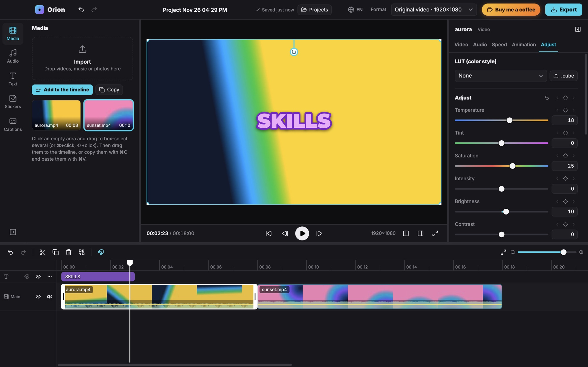

Open source and public: anyone can see it, use it and make it better. No watermark, no subscription, no ads and no sign-up. And everything, AI included, runs on your device.
macOS · Windows · Linux · Android · Chrome & Edge

A timeline and panels that feel like the editors you already know — without paying for them.
Magnetic main track, overlays, text and audio tracks, compound clips and smooth scrubbing — even with 4K footage.
Animate position, scale, color, volume or masks — or record a movement while the video plays.
Temperature, tint, saturation, highlights and shadows, built-in looks and your own .cube LUTs, in real time.
Automatic subtitles (Whisper), background removal, voice isolation and stabilization. No credits, no uploads.
MP4 from 720p to 4K at up to 60 fps, in the background while you keep editing. Any format: 16:9, 9:16, 1:1…
No account and no tracking inside the editor. Projects save themselves on your device.
Hi, I'm Rafa. I make Leo on my own, in my free time. I got tired of video editors charging you for every little feature, filling everything with ads, or ending up downloading a pirated copy from who knows where. So I did the opposite: an editor that's open, free and ad-free, with its code out in the open for anyone to see. My only goal is that anyone can edit video, whatever computer or phone they have.
If it's useful to you and you ever feel like it, there's a button inside the app to buy me a coffee. If not, use it anyway: that's what it's for.
Free for every system. No graphics card needed.
Open the file and let Android install apps from this source. It'll warn you with a scary face: that's normal, it isn't on Google Play because I haven't been able to afford it yet. Android 7 or newer.
Apple doesn't let you install apps from a website (unless you pay €99 a year, and that's where I am). What you can do: open Leo in Safari, tap Share → Add to Home Screen and it'll sit there with its icon like any other app.
The same editor, nothing to install. Works best in Chrome or Edge on a computer. Your files are still processed on your device.
Open Leo in the browserThe whole code is on GitHub under the GPL-3.0 license. Read it, build it, translate it or send a pull request — ideas and bug reports are welcome.
View on GitHub